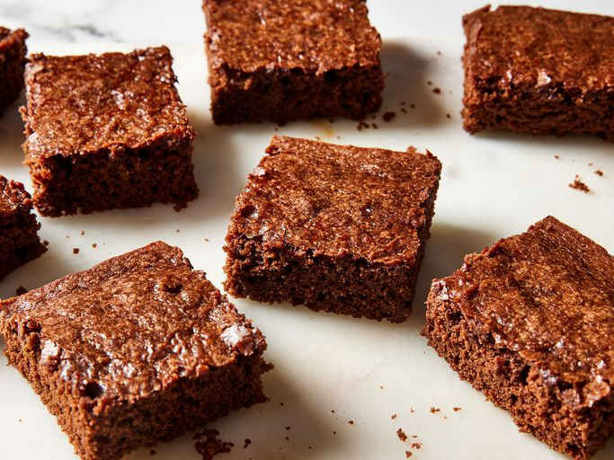

Home
Vegan Brownie Recipe

scrumptious vegan brownies
These vegan brownies are made with cocoa powder for a rich and gooey chocolatey treat. If you prefer brownies that are a little more solid, you can bake the brownies for longer than the recommended time.
Ingredients:
- Flour
- Sugar
- Cocoa powder
- Baking Powder
- Salt
- Water
- Oil
- Vanilla
Steps:
- Whisk the dry ingredients in a large bowl.
- Add the wet ingredients and stir until the batter is blended.
- Pour the batter into a prepared baking dish and spread evenly.
- Bake in the preheated oven until the top is no longer shiny and the center feels just set.
- Let the brownies cool before cutting them into squares.